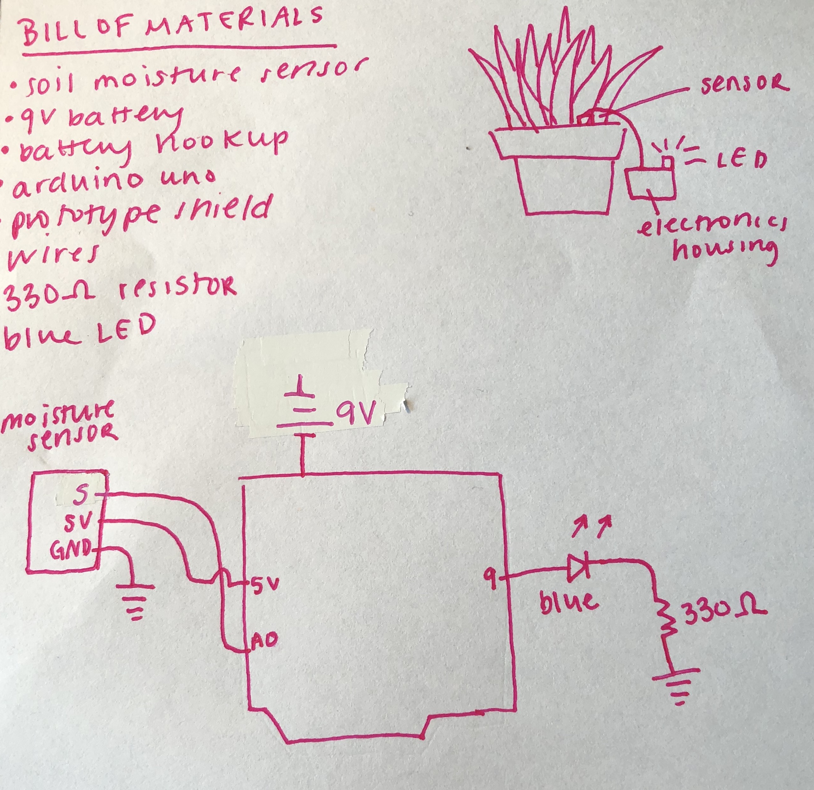
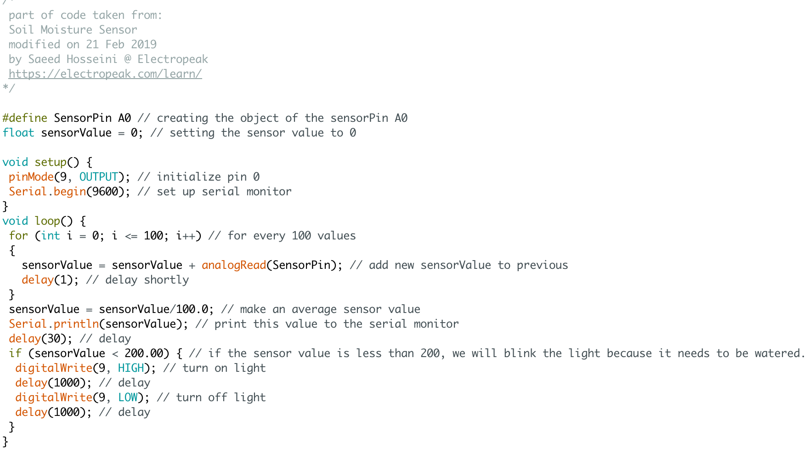
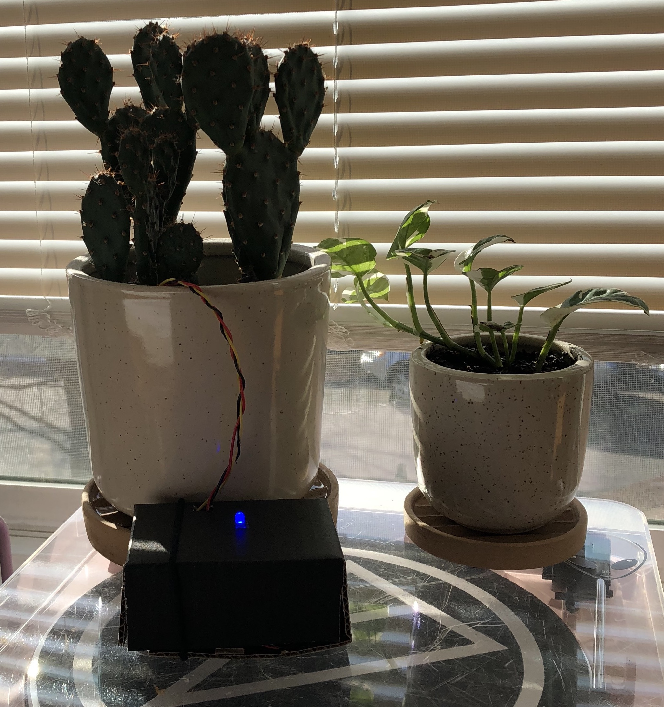
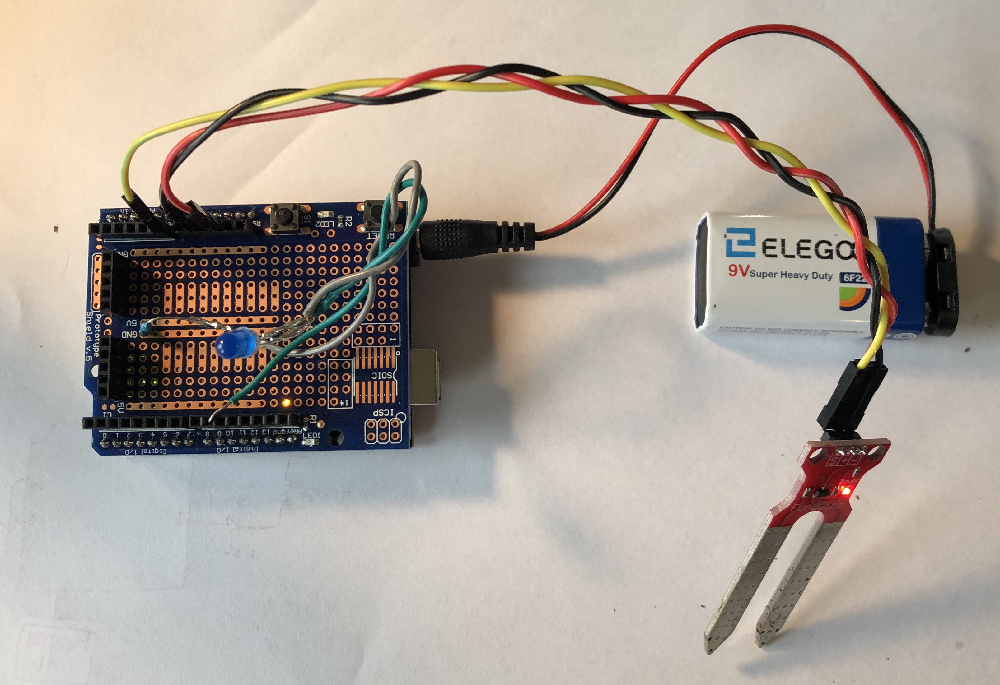

Alison's Final Project: Plant Moisture Sensor
Here is all the documentation for my final project!
Schematic

This is my initial sketch, it has a bill of materials, sketch, and schematic. This product is meant for people who are just getting into having houseplants. It can be rough sometimes to figure out when a plant needs to be watered, especially since every type has different requirements. This sensor is meant for any plant that is supposed to have consistently moist soil. It works by detecting the plant moisture, and if its getting too dry, it will blink an LED. I personally am having issues with root rot with a particular plant, so hopefully this will help.
To build this project you will need: a soil moisture sensor, a 9v battery, a battery hookup, an arduino uno, a prototype shield, wires, a 330 ohm resistor, and a blue LED. I chose to use a 330 ohm resistor for the blue LED, despite technically being able to use a 100 ohm one, because it is too bright and messes with my phone camera. Calculation: (5-3.3 = 20(10^-3)*R, R=85)
Code

This is my code for the arduino. It works by taking an average value of the soil moisture over a short period of time, and if the moisture is low enough, it flashes an LED to tell the user to water their plant.
Circuit
 
This is a picture of my circuit! The first picture is of the circuit itself, and the second is of it in it's housing. The shield is placed on tope of the prototype, and the moisture sensor is connected to power, ground, and A0. The negative end of the LED is soldered to the resistor, and the resistor is soldered to ground.The positive end is connected to pin 9. Finally, a 9V battery is plugged into the arduino. It is placed inside a small cardboard box, with two holes: one for the LED, and one for the moisture sensor, which needs to be in the soil.

And finally, here's a gif of my circuit's operation. I couldn't have done this assignment without the help of Jasper in learning how to solder, code is partially copied from this site.